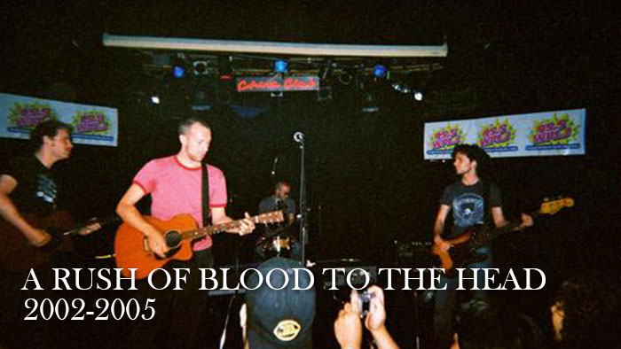
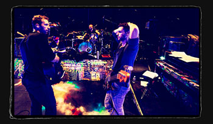

THE EARLY YEARS
COLDPLAYS BAND PLAN
6 JANUARY 1998
SAFETY EP
25 MAY 1998
NME - BANDS TO WATCH OUT FOR '99
JANUARY 1 1999
THE GIG THAT GOT THEM SIGNED
1 APRIL 1999
FIRST RADIO PLAY
18 APRIL 1999

BROTHERS & SISTERS EP
26 APRIL 1999
GLASTONBURY FESTIVAL
27 JUNE 1999
"Our tour manager, Jeff Dray, dropped us off at the wrong site entrance 10 minutes before we were due on stage."
PARACHUTES
THE BLUE ROOM EP
11 OCTOBER 1999
FIRST OFFICIAL VIDEO CLIP
6 MARCH 2000
FIRST NME COVER
6 JULY 2000

PARACHUTES - RELEASE
10 JULY 2000
THEIR FIRST HEADLINER TOUR
2 OCTOBER 2000
JONNY GOES JAZZ
01 DECEMBER 2000
TROUBLE WITH SIR ELTON JOHN
6 MARCH 2003
A RUSH OF BLOOD TO THE HEAD
A RUSH OF BLOOD TO THE HEAD - RELEASE
26 AUGUST 2002
THE SCIENTIST
4 NOVEMBER 2002
The scientist is one of their most popular songs.
WILL AT COACHELLA
30 APRIL 2005
Will talking about their Coachella experience.
X&Y
MAKING X&Y
14 DECEMBER 2004
X&Y - RELEASE
6 JUNE 2005
POSTCARD FROM WILL
1 FEBRUARY 2007
VIVA LA VIDA OR DEATH AND ALL HIS FRIENDS
VIVA LA VIDA OR DEATH AND ALL HIS FRIENDS - RELEASE
12 JUNE 2008
I AM ROADIE #42
17 JUNE 2008
The first introduction to R42 (Roadie #42) who covers socials for Coldplay.
Hello there, I am Roadie #42. My good friend Prospekt has asked me to keep you all posted on the goings on from inside the tour. I sit somewhere stage left through every performance. Wherever the band are in the world, I’ll be there and I’ll be reporting back to you.
So here we are in Brixton Academy. The crowd’s gone home, the floor’s a mess and the truck’s nearly packed. It must be the first night of the Viva La Vida tour.
In many ways, it feels as though we’ve run a marathon just to get to the starting line. Rehearsals have been brutally taxing. We’ve been flitting about across the planet doing TV shows, amidst trying to work out exactly what we need to do to be ready for the guys to play the songs. (Tympani drums? Cast iron bells? Butterfly confetti? Hand painted synths and guitars? None of this stuff comes off the shelf…)
Folks have been working around the clock in Wembley Arena to put together a live experience that does the record justice. The show is crafted and sculpted from months of mere imaginings in round table meetings. From the CAD drawings of Lighting Designer Paul Normandale and the “What we really want to do is…..” emails from the band, to the “How the hell are we going to…?” 4am headaches of Production Manager Craig Finley. Time comes to crush us, as ready or not, it’s time to take the show on the road.
After the scale of the Wembley production rehearsals, we rolled into Brixton with a very stripped back and bare show. In many ways, it’s a testament to the songs and the performance that the show was as good as it was. Proof (if it were needed) that the huge arena spectacle is about enhancement rather than distraction.
You all know how the show went – it was on the radio. As for us, let’s just say that there’s one very happy band walking out of the venue tonight and a large number of very relieved roadies.
See you all in Barcelona – the van’s here to take us to the airport. We should get some sleep once we’ve checked in at around 5am.
-R42
VIVA LA VIDA - MUSIC VIDEO
4 AUGUST 2008
This version of the Viva La Vida music video is made by Anton Corbijn, and is filmed in the Netherlands
MYLO XYLOTO
MYLO XYLOTO - RELEASE
24 OCTOBER 2011
REHEARSALS FOR THE MX ARENA TOUR
3 DECEMBER 2011
A blog by R42 about rehearsing for their MX tour.
LIVE 2012
19 NOVEMBER 2012
GHOST STORIES

GHOST STORIES - RELEASE
19 MAY 2014
RADIO 1'S BIG WEEKEND
23 MAY 2014
GHOST STORIES LIVE 2014
24 NOVEMBER 2014
A HEAD FULL OF DREAMS
A HEAD FULL OF DREAMS - RELEASE
4 DECEMBER 2015
A HEAD FULL OF DREAMS - OFFICIAL FILM
12 OCTOBER 2018
LIVE IN BUENOS AIRES
7 DECEMBER 2018
LOS UNIDADES - SIDEPROJECT
PARLOPHONE ANNOUNCES A NEW SIGNING..
26 NOVEMBER 2018
Parlophone Records, also known as Coldplay's record label announces they've signed a band that no one has ever heard of and hasn't even made any music yet to date. Fans quickly start to speculate and this Los Unidades stands for unsold ideas. The cover art strangely looks like the promotion photo for Coldplays song midnight from their Ghost Stories album. In the bottom of the pick is also a little anagram that says #coldplay2018
Parlophone Records are delighted to present new signing #LosUnidades pic.twitter.com/TZWr5ilJXu
— Parlophone Records (@parlophone) November 26, 2018